第九章：Vega 与波动率曲面（Vega and the Volatility Surface）
volatility 来自拉丁文 volare，意为"飞"。 —— 一位每逢市场恐慌就唱起《Volare》的意大利期权交易员
导读：本章要解决的问题
第七、八章把 delta 和 gamma 拆穿成"原点附近的局部量"，本章把同样的怀疑推向波动率维度的敏感度 vega，并由此进入全书第一处真正的高维结构：波动率曲面。Taleb 的核心命题一以贯之，对单一期权管用的东西，对一本账（book）不管用。raw vega 对一张期权也许够用，对组合几乎没有意义，因为不同到期的隐含波动率不会同步移动，把它们直接相加等于把不同币种的钱相加。
本章要解决的问题是：**当你持有一本横跨多个到期、多个 strike 的期权账，"波动率风险"到底是什么，怎么度量、怎么对冲？**Taleb 给出一条层层递进的路径：
- 先看单期权的 vega 及其性质（钟形、平值处对波动率二阶导为零、与 gamma 的精确关系）。
- 承认不同到期反应不同，引入加权的 modified vega，给出"理论权重" 与"经验权重"两种做法。
- 把现货波动率分解成 forward（远期/局部）波动率，因为路径依赖和延迟起点期权的真实敞口落在 forward bucket 上。
- 用协方差矩阵把 bucket vega 升级成多因子度量，得到一个单一的风险数（以及 VAR）。
- 最后把单维的时间曲线扩成二维的波动率曲面（Dupire-Derman-Kani），用"方块法"同时管理时间和 skew 两个方向的风险。
对我们这类读者，本章的理论价值密集。 把 vega 和 gamma 焊在一起，揭示"vega P/L = 不同波动率下 gamma 再平衡收益之差"；forward variance 的可加性 是方差在时间上线性的直接结果，也是 Dupire 局部波动率的前身；曲线/曲面的"平行移动-旋转-凸性变化"恰好对应主成分分析的前三个因子（level-slope-curvature）；协方差 bucket vega 则是一个 形式的二次型组合方差。笔记沿原文小节顺序展开，并在每个节点把这层映射写出来。
一、Vega 与 Modified Vega：单期权的性质
vega（非交易员也叫 zeta、kappa）是期权对其隐含波动率的敏感度，这里的隐含波动率对应"等于它停止时间（stopping time）的那个到期"。非香草期权更精确地说是对"从存续起点到停止时间之间的远期波动率"敏感。任何凸性结构都有 vega。本节先聚焦已知到期的欧式期权的简单 vega：
是匹配期权到期的隐含波动率， 是衍生品。数值上最稳的算法是在不同波动率水平重新定价。
实务上 vega 通常表达为离散度量（对波动率的一个离散移动），而且很多人把它乘以波动率水平，让它对应一个设定的百分比移动。例如波动率 18%、vega 是 0.5，那么波动率每升一个百分点到 19%，期权（或结构）涨 0.5。有人则按 implied vol 移动 1.8（即相对移动 10%）来算 vega，这样可以假设其他市场也有 10% 的 vega 移动，从而跨工具比较风险，他们的 vega 就是 。这个细节值得记住：报 vega 时必须说清它对应的是绝对一个点还是相对 10%，否则跨工具的比较毫无意义，这与第七、八章"每个 delta/gamma 都要附带步长"的纪律一脉相承。
多数 vega 随时间递减，例外是回望（lookback）和反向敲出（reverse knock-out），在某些条件下它们的 vega 随时间递增。这里先埋一个伏笔：路径依赖期权的 vega 期限行为是反常的，后面 forward bucket 才能讲清。
Vega 的钟形与对波动率的凸性
和 gamma、theta 一样，vega 呈钟形，在期权（按远期）平值时达到最大（图 9.1）。
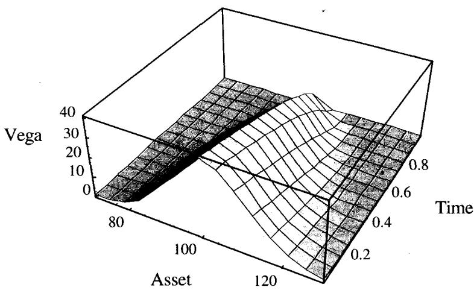
图 9.1 显示 vega 的钟形峰值落在平值，并随到期临近而收缩。
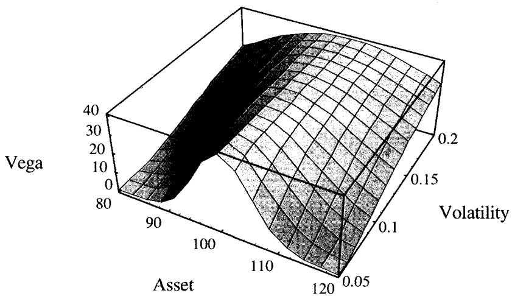
图 9.2 显示波动率上升如何拉长尾部，也透露了一层凸性：平值期权的 vega 在波动率上升时保持不变，而偏离平值的期权的 vega 会上升。
平值期权的 vega 对波动率是稳定的。偏离平值（实值或虚值）的期权，对波动率而言对持有者是凸的、对卖方是凹的。
这条规则容易验证：期权价格对波动率的二阶导数（即 volga / vomma）在 strike 等于远期时为零，并随 strike 偏离远期而越来越正。用我们的语言， 在 ATM 处为零、在两翼为正，意味着 long wings 的人对波动率是 long convexity（波动率越涨，vega 越大，收益加速），short wings 的人则 short 这层凸性。这正是第八章 long the wings 头寸"波动率上升时 gamma 更强"的 vega 侧表述，也是后面 skew 和波动率曲面交易的微观基础。
raw vega 对单一期权也许相关，但对一本期权账几乎没有意义。这个效应将在波动率期限结构的研究里深入展开。
Taleb 在这里第三次敲响全书的 leitmotiv：对一张期权管用的东西，对一本账不管用。常规训练让人摆弄 BSM 的标准导数，这对操作风格有负面影响，因为交易一张期权和交易一本账几乎不相干。用矩的语言说：一本账可以在低阶矩上中性，却在高阶矩上轻易失稳；期权账不像数学家以为的那么"紧致（compact）"，它通常在低阶矩中性、在高阶矩暴露于各种风险，而一张简单期权在高阶矩上反而没什么暴露。这句话为本章后面所有"把 vega 拆成 bucket、再用协方差矩阵聚合"的工作定了调。
Vega 与 Gamma：vega 是 gamma 收益的积分之差
vega 与 gamma 以一种奇特的方式相关，因为它们看起来朝不同方向演化。vega 是"期权存续期内 gamma 收益（即预期 gamma 再平衡 P/L）在某一波动率下的积分"减去"同一积分在另一波动率下的值"。直觉上，对一个 long 期权的持有者，波动率升高带来的 vega P/L，应当等于"市场如其所愿移动时、这段时期 gamma 收益的预期总和"。正是这个差值，对一个 gamma 对冲者，对应更高的 P/L。
Taleb 的例子很干净：一个跨式（straddle）持有者，因市场波动率从 15% 升到 16%，看到他的 3 个月跨式增值 100,000 美元。这精确意味着：如果新的、更高的波动率持续，他下一期的 gamma 收益应当恰好产出同样的 100,000 美元，除去滑点（slippage）。数学上：
是资产价格， 是剩余到期时间， 是波动率。
这个关系对我们极有用，它把两个看似独立的希腊字母锁死。从 BSM 的 PDE 出发，gamma 收益的瞬时率是 ，在 上对它积分、再对 求导，正好落回 量级。它的交易含义是：买 vega 就是买"未来 gamma 再平衡收益的预期增量"，long vol 与 long gamma 在期望意义上是同一笔交易的两种记账方式。这也解释了为什么 ATM 期权 vega 最大，因为 ATM 的 gamma 在整个存续期的积分期望最高。第八章 shadow gamma 把"市场动则波动率动"嵌进 delta，本章这个等式则反过来告诉你：波动率动带来的 vega P/L，本质就是 gamma 收益的重新估值。
二、Modified Vega：给不同到期的 vega 加权
不应在不加权的情况下比较、净掉或相加两个不同到期期权的 vega。
modified vega 是一个简化的单因子模型，用"按到期分组的波动率之方差"作为对冲精度的指标。Taleb 坦言它比不加权 vega 有力，但不如后面更进阶的 modified forward vega 推荐，读者可在两种方法间选择。
为什么一本账的 vega 敞口需要加权？直觉很实在。设头寸 long 一个月期权、对应 100,000 美元 vega，同时 short 等额 vega 的两年期权（意味着账上两年期权的张数少得多）。假设一个冲击击中市场，**一个月期权的波动率上升幅度会不会大于后月？**多半会，除非有结构性变化的信息表明这波波动率会持续。换句话说，如果明天股市崩盘，一个月期权波动率会大涨，但这种波动率预计不会持续整整一年；一年期权波动率也会涨，但比短期权小，因为市场预计过一阵会平静下来，长期期权只在它存续的早期阶段受影响。反过来，如果市场短暂沉寂，就认为波动率结构变了、市场失去全部活力，那是愚蠢的。
modified vega 因此对应"期权组合对波动率总体水平的非平行（nonparallel）变化"的敏感度。短到期通常对波动率更敏感（除非有时间性信息）。但操作者要开放心态：一旦发现某种原因下 vega 反向行动，就应相应校准权重。
是该到期桶的 vega， 是波动率权重。惯例是用一个钉在 3 个月（一个流动性足够、能让风险经理满意的中期视野）的波动率因子，所有期权都以它为基准比较敏感度。
理论映射：非平行移动就是期限结构的高阶主成分
把"非平行变化"翻译成我们的语言，就是波动率期限结构的移动不能用单一因子描述。若对整条 vol 期限曲线做主成分分析，第一主成分是 level（平行移动），第二是 slope（短端与长端反向），第三是 curvature。modified vega 的加权恰恰是在承认：一个冲击主要打在 slope 因子上（短端反应远大于长端），所以把所有 bucket 的 vega 直接相加（等于只测 level 因子）会严重误导。给短到期更大的权重 ，就是在用一个简化的单因子去近似 level+slope 的联合反应。后面的协方差 bucket vega 则是把这套主成分结构完整地用矩阵表达出来。
三、如何计算简单权重：理论权重与经验权重
波动率风险管理最重要的一步，是意识到权重的存在。操作者用的各种方法尽管复杂度不同，结果往往相似。
理论权重（）
按各到期名义久期的平方根来加权，交易员常称之为"理论"权重。它意味着长期波动率是常数，期权以 的速度回复到那个已知的长期水平。这种思路建立在"长期波动率恒定"的认知上，由板上最长期权的价格反映。Taleb 提醒，操作者常被市场证明是错的，因为 SP100 和 SP500 指数的波动率一直在持续衰减（dampening）。
计算方法：选一个支柱，比如 3 个月期权（通常最流动），用久期因子 加权其他月份。
例：一个月期权的敞口权重是 倍于 3 个月 vega；一年期权是 倍。也就是说，一个月里 100,000 美元的 vega 敞口，等价于 3 个月里 173,000 美元、一年里 346,000 美元的敞口。
理论映射： 来自方差可加 + 均值回复
这个 权重不是经验拟合，它有干净的推导。若瞬时方差以速度回复到长期均值，则不同到期的隐含方差对一次"瞬时波动率冲击"的敏感度，随到期拉长而以 衰减（冲击被摊到越来越长的时间窗里平均掉），落到波动率（标准差）层面就是 。Taleb 的"以 速度回复长期水平"正是这个意思。这也解释了波动率锥（volatility cone）为什么收口：短端波动率的波动率大、长端小。
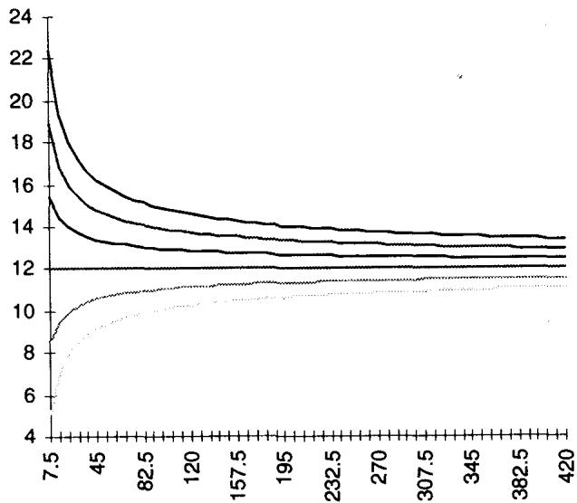
图 9.3 的波动率锥显示：短到期隐含波动率的取值范围宽，长到期收窄到长期均值附近，这是 衰减的图形。
经验权重
从市场价格观察到的行为导出的权重叫经验权重。计算方法：选 3 个月作支柱，用每个时期的相对波动率加权，相对波动率可取这个比值：
两种方法的测量结果往往相似，但有一个麻烦：权重会表现出相当的不稳定，还有非线性要考虑。冲击时，前端期权倾向过度反应并领先，后月期权通常等着看是否有结构性变化、还是只是一个波动率的小插曲（blip）。较小的冲击可能造成相反效果。
Taleb 给出他自己的实证研究（1988-1994，OTC 收盘数据）。表 9.1 是日度变化（1400 个观测），表 9.2 是 10 日非重叠变化（1390 个观测），都计算"该时期 implied vol 移动相对 3 个月移动"的比值：
| 时期 | DM | JY | 平方根（理论） |
|---|---|---|---|
| 1 个月 | 1.84 | 1.75 | 1.73 |
| 2 个月 | 1.30 | 1.31 | 1.22 |
| 3 个月 | 1.00 | 1.00 | 1.00 |
| 6 个月 | 0.60 | 0.64 | 0.71 |
| 1 年 | 0.36 | 0.39 | 0.50 |
表 9.1（日度观测）。注意一个关键现象：经验权重在短端比理论 权重更大（1 个月 1.84 vs 1.73），在长端比理论更小（1 年 0.36 vs 0.50）。
| 时期 | DM | JY | 平方根（理论） |
|---|---|---|---|
| 1 个月 | 1.68 | 1.73 | 1.73 |
| 2 个月 | 1.26 | 1.29 | 1.22 |
| 3 个月 | 1.00 | 1.00 | 1.00 |
| 6 个月 | 0.65 | 0.66 | 0.71 |
| 1 年 | 0.37 | 0.44 | 0.50 |
表 9.2（累计 10 日）。Taleb 的结论是："难以置信的事似乎成真了"：存在如此强的均值回复，以至于长期均值在一次大幅上涨后似乎会下降、反之亦然，这一点由一年期权的相对稳定性泄露出来。换句话说，真实市场的长端波动率比 模型预测的更稳定，因为短端的冲击被均值回复迅速吞掉，没能传导到长端。
这套加权方案适用于 swaption 和债券期权，但对 forward-forward 期权（如 EuroMarks、Eurodollars、Eurolira 等）要格外小心。这些桶对应不同的底层工具，各有自己的波动率和波动率机制。
权重的一个缺陷是可能不够稳定，让交易员无法把头寸视为"square"。这导致一个数值敞口，需要计入到期之间的跟踪波动。这正是下一节协方差 bucket vega 要解决的。
四、Forward Implied Volatility：远期隐含波动率
更现代的 vega 风险评估方法，是研究非重叠 forward bucket 的协方差矩阵。在分析之前，必须先定义远期波动率。
两个日期 、 之间的远期（也叫 forward-forward）隐含波动率，代表从期权价格推断出的、这两个时期之间的预期波动率。后面会讨论它向 Dupire"局部（local）"波动率的推广。
涉及路径依赖或延迟起点期权的交易员，必须在 forward bucket 里检查他们的 vega 风险。
计算远期隐含波动率
把时间分解成对应市场可交易日期的非重叠切片（图 9.4）。定义最早可能的起始日为 （当它是当下时即为 0），定义 为 与 之间的波动率。于是 到 之间的波动率就是市场惯常报价的"该时期波动率"，90 天期权的波动率即 ， 是方差。
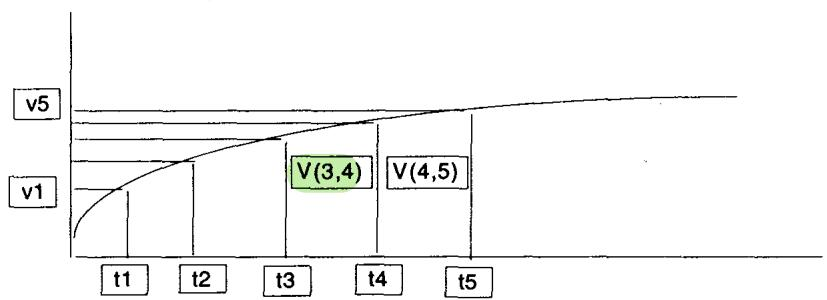
若用等长时间切片：
若用不等长切片 到 （更合适，因为市场对很短的日期定价窄桶、对长日期定价宽桶）：
是 与 之间的年化方差。两点之差可以是几个月，也可以只是几分钟，甚至可以设想 是一小时、 是一个月。因此，只要知道 0 到 、以及 到 之间的波动率，就能推断 与 之间的"局部"波动率：
于是选择市场上有期权报价的 和 ，可导出交易员所称的远期波动率：
理论映射：方差在时间上线性，正是布朗运动的独立增量
这一整套公式只依赖一个事实：**在常数（或确定性）瞬时波动率下，方差对时间线性可加。**布朗运动的增量独立，，于是总方差 等于各段远期方差的时间加权和。Taleb 写的等长/不等长公式，就是把"总方差 = 段方差之和"按天数权重展开。远期波动率因此是把"长期方差减去前段方差、再除以剩余时间、开根号"，这与利率里从即期收益率反解远期利率（forward rate）的代数完全同构。"波动率以即期而非远期报价，所以套利更难发现、市场更容易脱节"这句提醒，也对应固定收益里 forward rate 隐含在 spot curve 里、不直接交易的那种隐蔽性。
例 1（远期曲线的推导）：， 天， 故 天。市场上 90 天和 180 天波动率分别是 17% 和 15.5%，记 、：
市场为 3 个月到 6 个月这段时期定价了 13.84% 的波动率。注意它显著低于即期的 15.5%，这是即期曲线下行（backwardation）时远期被"拆"得更低的典型表现。
例 2（生成远期波动率曲线）：从表 9.3 的即期波动率曲线出发计算远期波动率：
| 天数 | DM 即期波动率 (0, days) | 桶间远期波动率 |
|---|---|---|
| 30 | 16.00 | 16.00 |
| 60 | 15.30 | 14.57 |
| 90 | 14.70 | 13.42 |
| 180 | 13.60 | 12.40 |
| 360 | 12.85 | 12.05 |
| 720 | 12.20 | 11.51 |
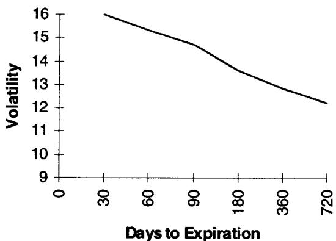
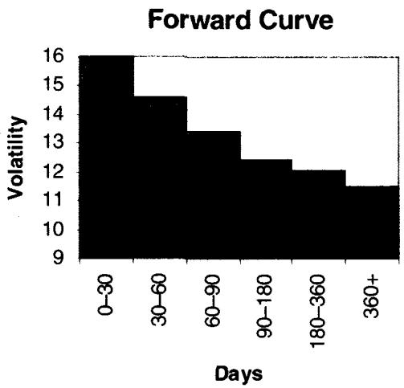
图 9.5 与 9.6 对比即期与远期曲线：远期曲线放大了即期曲线的斜率，下行的即期曲线对应一条更低、更陡的远期曲线。这与收益率曲线里 forward 放大 spot 斜率的现象一致。Taleb 提醒，某个桶的远期波动率显著偏低或偏高，有时会暴露套利的存在；因为期权按即期波动率而非远期波动率交易，套利更难被发现，市场也更容易脱节。
远期波动率方法只适用于可替代（fungible）资产上的期权，如外汇或股票。Eurodollar 期权等是非重叠工具，对来自 Eurodollar 账的 vega 用上述方法分析会扭曲风险。
Bucket Vega 与路径依赖期权
bucket vega 对香草期权是更有力的风险工具，对路径依赖期权则是唯一可行的分析方式。香草期权对方差呈线性的桶敏感度，路径依赖期权则在时间桶里呈不均匀敞口，有些（如敲出期权）可能在一个桶 long vega、在另一个桶 short vega。这就是本章开头"lookback 和 reverse knock-out 的 vega 随时间递增"那个伏笔的落点：它们的 forward vega 在不同桶里符号和量级都不同，只有 bucket 分解才看得见。
例：把常规 vega 翻译成 forward bucket（仅适用于香草）
假设从一个"直接（straight）"桶读到的 DEM 期权敞口：
| 到期 | 敞口 |
|---|---|
| 0-30 | 100 |
| 0-60 | -148 |
| 0-90 | 17 |
| 0-180 | 167 |
| 0-360 | -233 |
| 合计 | -97 |
这些数字像商用风险系统的输出。若交易员买一个 3 个月期权，整个头寸 vega 会显示在以 3 个月结束的那个桶（这里是 0-90）。操作者需要快速修正：假设路径无关期权的敞口沿时间线性分布（一个 3 个月期权在 0-30 桶有 1/3 vega、30-60 桶 1/3、60-90 桶 1/3）。
这一点可以理论证明。简言之，gamma 在末端最强，但处于最强点的概率很小；gamma 在开头更均匀但更弱。也可以这样看：gamma 盈亏的期望不随时期变化，两个不同波动率水平下积分之差对应 vega。考虑到桶不等长（开头窄、末尾宽），一个一年期权会有：
- 50% 敞口在 180-360 桶；
- 25% 敞口在 90-180 桶；
- 8.33% 敞口在 0-30、30-60、60-90 桶各一份。
表 9.4 分解这个敞口（单位千）：
| 0-30 | 30-60 | 60-90 | 90-180 | 180-360 | 总敞口 | |
|---|---|---|---|---|---|---|
| 0-30 | 100 | -74 | 5.67 | 27.83 | -19.42 | 40.00 |
| 30-60 | -74 | 5.67 | 27.83 | -19.42 | -60.00 | |
| 60-90 | 5.67 | 27.83 | -19.42 | 14.00 | ||
| 90-180 | 83.50 | -58.25 | 25.00 | |||
| 180-360 | -116.50 | -116.50 |
这张表的读法：每一列是一个原始累计桶（如 0-90 的 17）按线性假设摊到各 forward 切片，每一行加总得到该 forward 桶的真实敞口。结果把"看似 0-90 净 long 17"的头寸还原成 forward 桶里 +40、-60、+14、+25、-116.5 的真实分布，符号和量级都和原始累计桶大不相同。**这就是 raw bucket 和 forward bucket 的根本差异：前者是累计的、互相重叠的，后者是边际的、可加的。**对冲必须在后者上做。
五、Multifactor Vega：协方差 bucket vega
这个进阶方法引入一个远期波动率相关性矩阵。只要头寸不含路径依赖或延迟起点成分，它也能用在即期波动率敞口上。方法详见第 12 章，这里基于桶的正常行为建立"预期风险"的概念。
第一步：操作者构建 forward-forward 桶之间百分比移动的相关性矩阵，比如把时间切成 0-30、30-60、60-90、90-180、180-270、270-365、365-730 等，用历史分析填入各相对时期之间的相关性（表 9.5、9.6）。
| 桶 | 0-30 | 30-60 | 60-90 | 90-180 | 180-360 |
|---|---|---|---|---|---|
| 0-30 | 1 | 0.33 | 0.25 | 0.174 | 0.098 |
| 30-60 | 1 | -0.33 | 0.16 | 0.154 | |
| 60-90 | 1 | -0.14 | -0.057 | ||
| 90-180 | 1 | -0.19 | |||
| 180-360 | 1 |
表 9.5：DEM 期权波动率桶的相关性矩阵（1994-1995，284 个交易日）。注意相邻桶相关性正且较高（0-30 与 30-60 是 0.33），远离的桶相关性低甚至为负。这种结构是后面"相邻桶敞口更彻底地相互抵消"的来源。
| 桶 | 年化波动率的波动率 (%) | 日度波动率的波动率 (%) |
|---|---|---|
| 0-30 | 48.80 | 3.07 |
| 30-60 | 38.74 | 2.44 |
| 60-90 | 40.47 | 2.55 |
| 90-180 | 18.65 | 1.17 |
| 180-360 | 13.53 | 0.85 |
表 9.6：各桶变化的年化波动率（vvol）。短端的波动率之波动率远高于长端（0-30 是 48.8%，180-360 只有 13.53%），这就是前面 衰减和波动率锥的实证版。
Taleb 也指出这类相关性矩阵的统计困难：回溯多久才有意义？太长的采样期可能纳入波动率行为完全不同的远古时段，太短又冒失去统计显著性的风险。还有一层困难是，在未必能用最小二乘模型刻画的市场里，选用线性统计关联（相关性）本身是否合适。
第二步：用简单矩阵代数计算最终敞口，得到一个单一数字。这个分析除了给出 vega 权重，还揭示敞口的稳定性：相邻桶兼容性更强，它们之间的敞口比远距桶的敞口抵消得更彻底。
理论映射：bucket vega 就是一个二次型组合方差
矩阵计算不必让交易员却步，电子表格都能做。先写下公式。各 forward 桶的（日度）波动率向量 ，敞口向量 （输入用"波动率移动 10% 的 vega"，即波动率从 15% 移到 16.5% 的 P/L，每个再乘以 10 倍对应的日度波动率 ），以及相关性矩阵 （用各时期对数之差的百分比变化作单位）。把 的转置乘以矩阵、再乘 ，得到的数表达"波动率总体水平移动一个标准差时预期的净 P/L"。
用我们的语言，这就是组合 vega P/L 的方差：
其中 是各桶波动率的对角阵， 是相关性矩阵， 是协方差矩阵。开根号就是组合的 vega VAR。Taleb 用 10% 的局部带（local band）而非把波动率移到零来取 vega，是因为波动率对账本的影响非线性，用"face value vega"（把 vol 移到零）会严重失真，这又是 volga 凸性的体现。
例：取前面的敞口（表 9.7）。
| 桶 | Vega 敞口 | 日度桶波动率 (%) |
|---|---|---|
| 0-30 | 40,000 | 3.07 |
| 30-60 | -60,000 | 2.44 |
| 60-90 | 14,000 | 2.55 |
| 90-180 | 25,000 | 1.17 |
| 180-360 | -116,500 | 0.85 |
用单因子"加权"波动率框架，这个头寸显示为平（表 9.8）：
| 桶 | Vega | 权重 | "加权"敞口 |
|---|---|---|---|
| 0-30 | 100,000 | 1.73 | 173,000 |
| 0-60 | -148,000 | 1.21 | -179,080 |
| 0-90 | 17,000 | 1 | 17,000 |
| 0-180 | 167,000 | 0.71 | 118,570 |
| 0-360 | -233,000 | 0.55 | -128,150 |
| 加权合计 | 1,340 |
vega(0,90) 可用中间桶重构：
关键发现：同一个头寸用单因子加权看是平的（加权合计仅 1,340），但用协方差矩阵算出的 value at risk 是 21,000。也就是说，**用准确的历史数据，这个"看起来 square"的头寸预计平均每天移动 21,000 美元。**这个反差是本节的全部要点：单因子加权只压住了 level 因子，bucket 之间的相对移动（slope、curvature 以及不完全相关）仍然在产生真实的日度 P/L 波动，只有协方差矩阵能把它捕捉成一个 VAR 数字。一个更有意思的方向，是除了时间桶，还把可能的 skew 移动也纳进来，这就引向波动率曲面。
六、曲线与曲面的移动：从平行到旋转到凸性
任何曲线（波动率、利率、远期价格）都可能经历下面几类移动。
Taleb 给出曲线移动的层级，这是本章最该被我们的因子语言吸收的一节：
一阶：平行移动（parallel shift）。
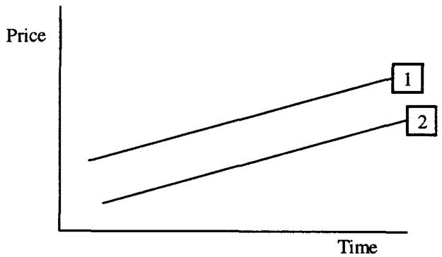
二阶：旋转（rotation）。
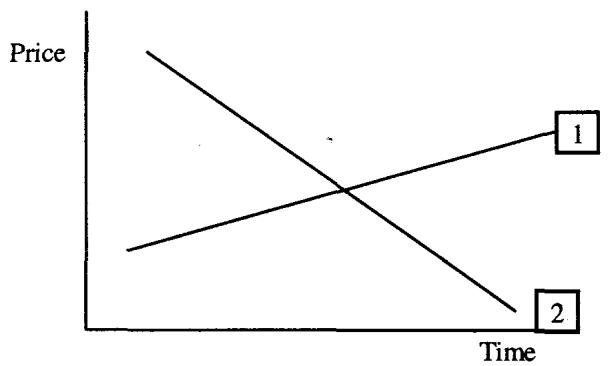
三阶：凸性变化（convexity changes）。
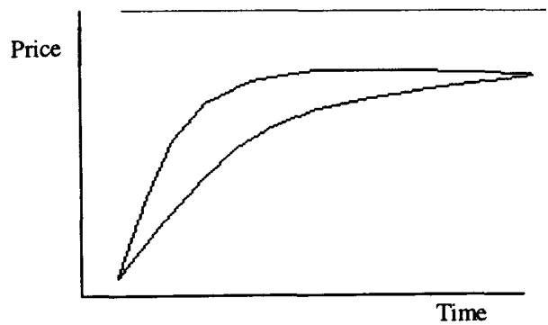
一条曲线可以经历上述因子的任意组合。同样的概念适用于波动率曲面：
一阶：平行移动。
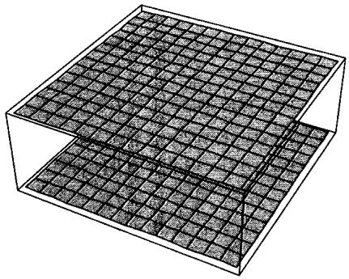
二阶：旋转。
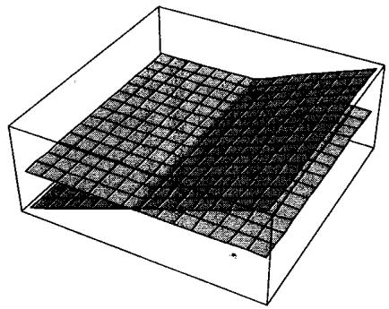
组合。
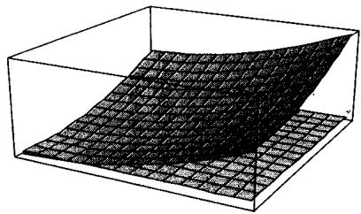
**更高阶：**还会经历更有趣的形变，有些相当荒诞但并非不可能。
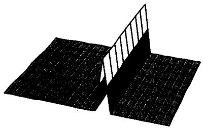
理论映射：这就是主成分分析的 level-slope-curvature
平行移动、旋转、凸性变化这三层，精确对应固定收益和波动率建模里对曲线做主成分分析得到的前三个因子：第一主成分 level（整体平移，解释方差最大），第二主成分 slope（一端上、另一端下的旋转），第三主成分 curvature（中段相对两端的凸性变化）。Litterman-Scheinkman 对收益率曲线的经典分解就是这三个。Taleb 用图形把这套因子结构讲给交易员听，而第五节的协方差 bucket vega 正是这套分解的数值实现，相关性矩阵的特征向量就是这些移动模态，特征值就是各模态的方差贡献。把 vega 敞口投影到这些模态上，才知道头寸真正暴露在 level、slope 还是 curvature 上。一个 level 中性（单因子加权为平）的头寸，完全可能在 slope 或 curvature 上巨幅暴露，这正是上一节 21,000 VAR 的来源。
七、波动率曲面（Dupire-Derman-Kani Surface）
波动率曲面（交易员也叫 Dupire-Derman-Kani 曲面）把市场隐含波动率表示为到期时间（横轴）和 strike（纵轴）的函数。它用来导出：
- 一条即期曲线，显示 0 到时间 的波动率；
- 一条"局部（local）"波动率曲线，显示未来不同时点、不同资产价格水平上的瞬时波动率。
Taleb 给了一个漂亮的类比：**局部波动率之于远期波动率，正如对角价差（diagonal spread）之于日历价差。**局部波动率是 Dupire、Derman、Kani 对"两点之间远期波动率"的推广：远期波动率只沿时间维推广，局部波动率同时沿时间和价格（strike）两维推广。用我们的语言，远期波动率 是把总方差沿时间拆分，局部波动率 则是把方差同时沿时间和现货水平拆分，Dupire 公式从曲面的 和 反解出它。
表 9.9 是 CME 上市 SP500 期权的隐含波动率，作为距到期天数和 strike 的函数（由做市商提供的、最流动时段的准确快照，以避开结算价系统的慢性误差）：
| Strike | Log(S/K) | Dec (30天) | Jan (67天) | Feb (121天) | Mar (219天) |
|---|---|---|---|---|---|
| 525 | 0.11 | 21.5 | 18.45 | 17.43 | 17.22 |
| 545 | 0.07 | 18.15 | 16.45 | 16.1 | 16.00 |
| 565 | 0.03 | 14.7 | 14.45 | 14.5 | 14.97 |
| 585 | 0.00 | 12.35 | 12.6 | 13.2 | 13.92 |
| 600 | -0.03 | 10.85 | 11.45 | 12.3 | 13.25 |
| 615 | -0.05 | 9.86 | 10.55 | 11.5 | 12.65 |
| 630 | -0.07 | 9.86 | 10.0 | 11.0 | 12.45 |
这张曲面有两个方向的结构值得读出来。沿 strike 方向（固定到期），低 strike（虚值 put，对应正 Log(S/K)）波动率高、高 strike（虚值 call）波动率低，这是股指典型的负 skew（下行保护贵）。沿时间方向（固定 strike），近月的 skew 陡峭（30 天从 21.5 一路降到 9.86），远月的 skew 平缓（219 天从 17.22 到 12.45），这是 skew 随到期"摊平"的典型期限行为。
Taleb 强调几个实务约定：put/call parity 受到尊重，因为 put 和 call 通常按同一波动率交易；美式特性是"弱"的（第一章），做市商通常用任一 strike 的虚值腿作基准，若 put 虚值，就用它的波动率而非对应 call 的。比起用原始 strike，用"moneyness 百分比"（通常定义为 ）更有意义。表中首个期货交易在 585。
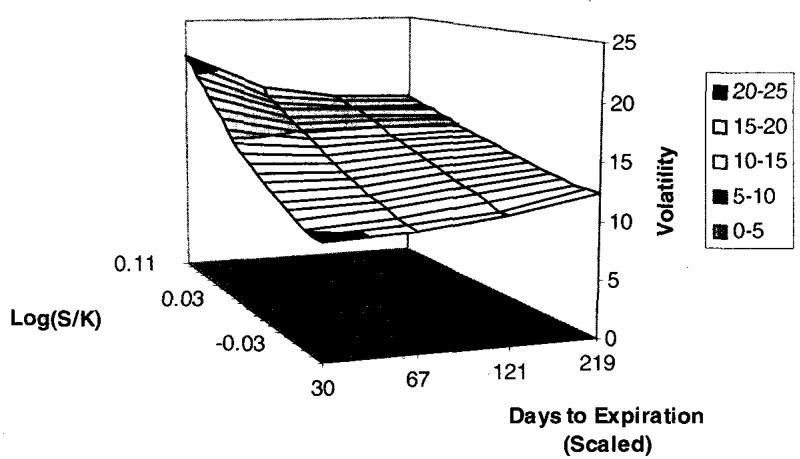
图 9.7 是即期曲面（不是本章前面讲的远期波动率曲面）。
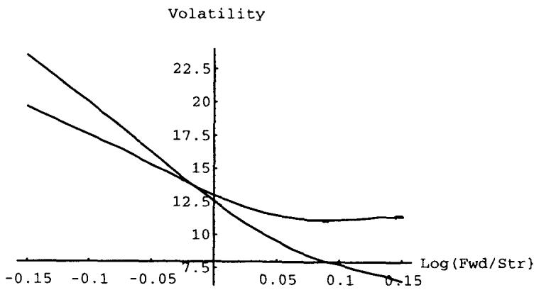
图 9.8 对应一个把波动率估计为 strike 和到期函数的拟合曲面。
八、方块法（Method of Squares）：同时管理时间与 skew
把多因子 vega 那套方法（用波动率矩阵隔离桶里的敞口、检验对冲稳定性）推广到二维，就是方块法：把头寸切成 strike × 到期 的小方块，估计每个方块的 vega。它的好处是揭示头寸对各种形变的敏感度，比如 skew 稳定性（图 9.9）。
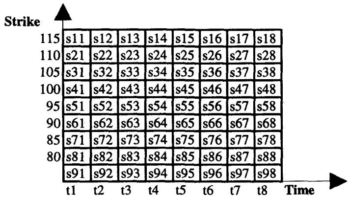
这个方法在"有 skew"的市场是必需的，比如股指或凶悍的 Euro-Yen，那里 skew 形状的风险常常超过波动率水平本身的风险。交易员接着在不同方块的隐含波动率之间跑相关性矩阵，得到清晰的风险图。在 well-behaved 市场不必如此，但在 skew 产品里是必须的。例如 DEM-USD 对里，方块 s17 与 s57 或同在 t7 桶的任何方块高度相关；SP 则不然，skew 移动会引起波动率曲面的某种旋转。最终的 vega 敞口可通过画一个巨大矩阵、重复前面多因子 vega 的练习得到。
理论映射：方块法是二维曲面上的协方差风险分解
方块法是第五节 bucket vega 从"时间一维"到"时间×strike 二维"的自然推广。在 DEM-USD 这种 well-behaved 市场，同一到期桶内不同 strike 方块高度相关，意味着 skew 基本平移、不旋转，于是一维时间桶分解就够了。在 SP 这种市场，skew 会旋转，同一到期桶内低 strike 和高 strike 方块的相关性低甚至反向，必须用二维方块矩阵才能捕捉。把每个方块的 vega 敞口排成向量、对方块间隐含波动率构建协方差矩阵 ，再算 ，就得到同时计入时间和 skew 两个方向移动的组合风险。这正是把第六节的 level-slope-curvature 因子从单条曲线扩展到整张曲面：曲面的主成分既有时间方向的，也有 strike 方向的（skew 的平移与旋转）。
九、本章综述：理论与实务的对照
| Taleb 的实务命题 | 对应的理论命题 |
|---|---|
| 报 vega 要说清是绝对一点还是相对 10% | 离散敏感度依赖步长，跨工具比较需统一口径 |
| 平值 vega 对波动率稳定、两翼凸 | volga 在 ATM 为 0、两翼为正 |
| vega = gamma 收益积分之差 | ，long vol = long 未来 gamma 收益增量 |
| 不加权不能相加不同到期 vega | 期限结构非平行移动，单因子相加只测 level |
| modified vega 给短端更大权重 | 主成分 level+slope，冲击主要打在 slope |
| 理论权重 | 方差可加 + 均值回复 ⇒ vega 敏感度随 衰减 |
| 长端比 更稳定 | 强均值回复，短端冲击被吞、不传导到长端 |
| forward variance 沿时间可加 | 布朗运动独立增量， |
| 远期波动率从即期反解 | 同利率从 spot 反解 forward rate 的代数 |
| 香草 vega 沿时间线性、路径依赖不均匀 | bucket 边际敞口可加，knock-out 可跨桶变号 |
| raw bucket vs forward bucket | 累计重叠 vs 边际可加，对冲在后者上做 |
| 协方差 bucket vega 给出 VAR | ，单因子平的头寸 VAR 仍达 21,000 |
| 曲线移动：平行-旋转-凸性 | PCA 三因子 level-slope-curvature |
| 局部波动率之于远期 = 对角价差之于日历 | Dupire 把方差沿时间×价格两维拆分 |
| 方块法管理 skew | 二维曲面的协方差分解，捕捉 skew 旋转 |
核心观点
第一，raw vega 对一张期权够用，对一本账误导。不同到期的波动率不同步移动，把它们直接相加等于无视期限结构。这是本章反复回到的 leitmotiv。
第二，vega 和 gamma 是同一枚硬币。 说明买波动率就是买未来 gamma 再平衡收益的预期增量，平值期权两者都最大。
第三，真实的 vega 敞口住在 forward bucket 上。即期波动率是累计的、重叠的；只有把它拆成边际、可加的远期波动率桶，路径依赖期权的真实暴露才显形。
第四，单因子加权只压住 level。一个看似 square 的头寸可能在 slope、curvature、skew 旋转上巨幅暴露，必须用协方差矩阵算出 VAR 才看得见。曲线和曲面的移动本质是 PCA 的几个因子。
第五，skew 市场必须上方块法。当波动率曲面会旋转（如股指、Euro-Yen），一维时间桶不够，要在时间×strike 二维上做协方差分解。
面对一本期权账的 vega 操作清单
- 这个 vega 是绝对一点还是相对 10% 的口径？跨工具比较前统一了吗？
- 头寸在 strike 上偏离平值多远？是 long 还是 short 这层 volga 凸性？
- 用 反推，我的 vega 头寸等价于多大的未来 gamma 收益预期？
- 不同到期的 vega 加权了吗？用理论 还是经验权重？这个市场的长端真有那么稳定吗？
- 头寸含路径依赖或延迟起点成分吗？若有，必须在 forward bucket 而非 raw bucket 上看 vega。
- 我看到的是累计 raw bucket 还是边际 forward bucket？对冲做在哪个上？
- 单因子加权说它 square，协方差矩阵给的 VAR 是多少？两者差多少？
- 这个头寸暴露在 level、slope 还是 curvature 上？画出曲线移动模态了吗？
- 这是 skew 会旋转的市场（股指、Euro-Yen）吗？需要上方块法吗？
- 这是可替代资产吗？forward vol 方法对 Eurodollar 这类非重叠工具会失真，我用错方法了吗？
一句话收束
本章最该记住的一句：**vega 与其当成一个数，不如当成一整张曲面上的敏感度分布，真正的波动率风险藏在不同到期、不同 strike 之间的相对移动里（slope、curvature、skew 旋转），而把各处 vega 简单相加的 raw 度量，恰恰把这些相对移动当成了零。**要管好一本账，先把波动率拆成边际、可加的 forward bucket 和方块，再用协方差矩阵把它们重新聚合成一个你能对冲的风险数。